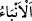

gerek inkârcıların, gerek Efendimiz (s.a.)’in işleri yerini bulmuştur, yerleşip sâbit
kalacağı bir duruma gelecektir. Bu durum dünyada inkârcılar için rezillik ve
rüsvaylıktır, Efendimiz için zaferdir. Âhirette, inanmayanlar için şakâvet ve bedbahtlık;
Efendimiz ve inananlar için saâdet ve mutluluktur. Bir şey amacına ulaşınca, yerleşerek
sabitleşir. Yâni “istikrar”, gayeye ulaşmaktan kinayedir. Gayeye ulaşınca, bütün
gerçekler açıklanmış, her şeyin hakikati ortaya çıkmış olur. İyilik ve kötülük, hak ve
bâtıl, yalan ve gerçek anlaşılmış, karışıklık ve şüpheler giderilmiş olur. Sonuçta bütün
hakikatler ortaya çıkacaktır.
Bu âyet-i kerîme’nin ifâde ettiği mânâ, müşrikler için bir tehdid, Peygamberimiz
(s.a.)’e ve mü’minlere bir müjdedir. Bu âyet-i celile’nin bir benzeri de “Her haberin
gerçekleşeceği bir zaman vardır. Yakında siz de gerçeği bileceksiniz.” (el-En’am,
6/67) âyetidir. Her önemli haberin zamanı uzasa da gerçekleşip amacına ulaşması, hak
veya bâtılın hakikatinin ortaya çıkması kaçınılmazdır.
Aynü’l-meânî’de şöyle denilmiştir; Allah’ın vaad ettiği şey vaktinde yerine gelecektir.
Allah’ın muradından, dilemesinden hiçbir şey değişmez, neyi murad etmişse mutlaka
olur. Onu Allah’tan başkası değiştiremez. Allah dilediği şeyi vaktinde, yarattıklarının
üzerinde gerçekleştirir. Çünkü daim ve bâkîdir. Burada ayrıca şuna da bir işâret vardır;
Allah’ın Peygamberi Hz. Muhammed (s.a.)’in işi rûhânîliktir. Ebû Cehil’in işi de
nefsânîliktir. Ulaşıp yerleşeceği bir nihâyeti ve gayesi vardır. Ya ilâhî ahlâk ile
ahlâklanmak aracılığı ile ebedî saâdet ve mutluluk veya hayvânî olan beşerî niteliklerle
sıfatlanmak sebebiyle sermedî ve sonsuz şekâvet ve bedbahtlıktır.
4. Andolsun onlara, kötülükten önleyecek nice önemli haberler gelmiştir.
Mekkelilere Kur’an’da haberler gelmiştir. “__WORD__/Enbâ’”, “büyük faydası olan haber”
anlamındaki “__WORD__/nebe’” kelimesinin çoğuludur. Onunla ilim veya muhtemel olan bir zan
elde edilir. İçinde şu üç şey bulunmadıkça habere “nebe’” denmez: a) Geçmiş çağlara
âid haberler, b) Âhirete âid haberler, c) Kâfirlerin mârûz kalacakları azâbı dile getiren
haberler.
Bu haberlerle, geçmiş çağların uyarıldığı ve karşılaştıkları felaketlere dâir haberler
kasdedilir. Azap ve sakındırmayla, âhirete dâir haberler kasdedilir. Tehdid, sakındırma
veya sakındırma yeri anlaşılır. İnançsızlık ve itâatsizlik sakınılması gereken yerlerdir.
“And olsun ki, Rasûlullah, sizin için, Allah’a ve âhiret gününe kavuşmayı
umanlar ve Allah’ı çok zikr edenler için güzel bir örnektir” (el-Ahzab, 33/21) âyet-i
kerîme’sinde olduğu gibi o bizzat kendisi, güzel bir örnektir.